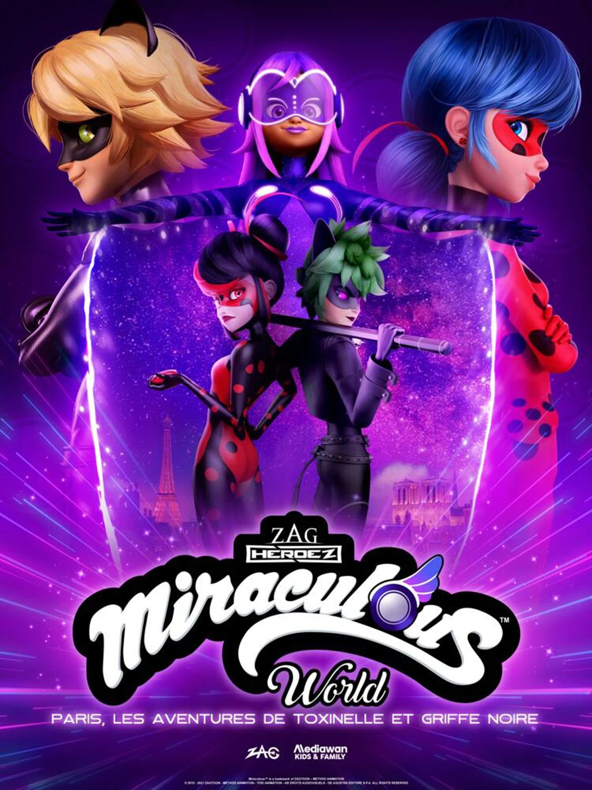
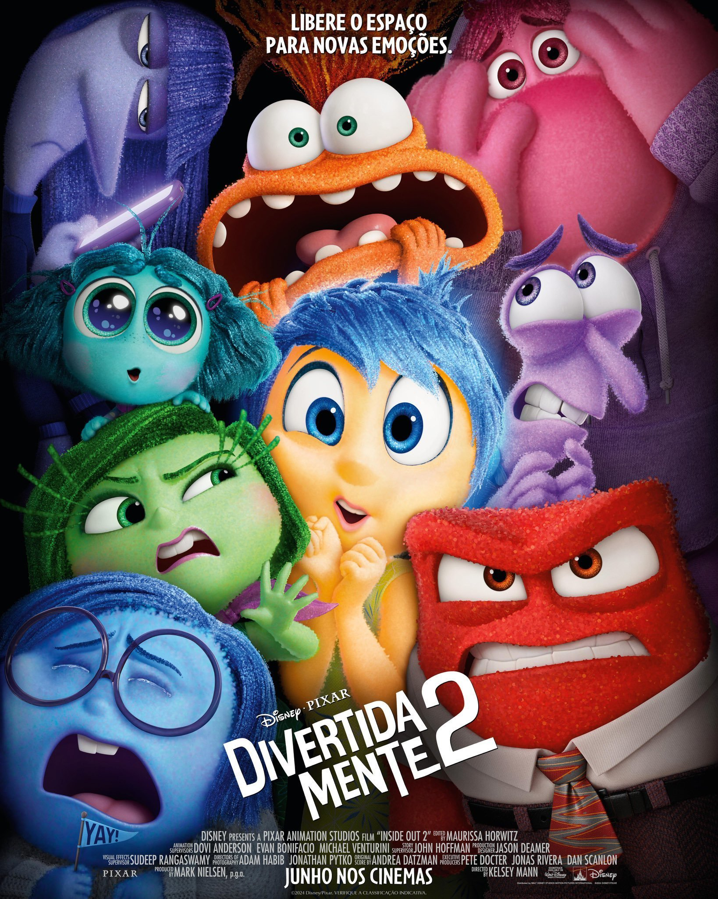
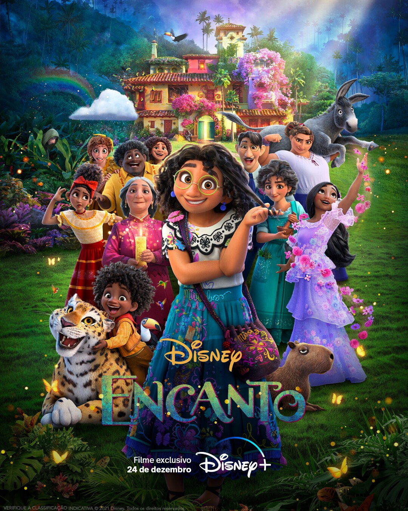

Marinette e Adrien precisam lidar com seus novos poderes, enquanto suas versões malignas, Shadybug e Claw Noir, estão em Paris atrás do Miraculous da Borboleta.

Na adolescência de Riley, suas emoções antigas têm dificuldades para lidar com as novas emoções, o que complica seu amadurecimento.

Uma menina colombiana pode ser a última esperança de sua família quando descobre que a magia que envolve o Encanto, um lugar que abençoa crianças com dons únicos, está em perigo.
_bg_png.png.png)